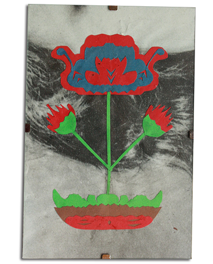
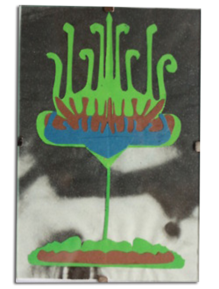
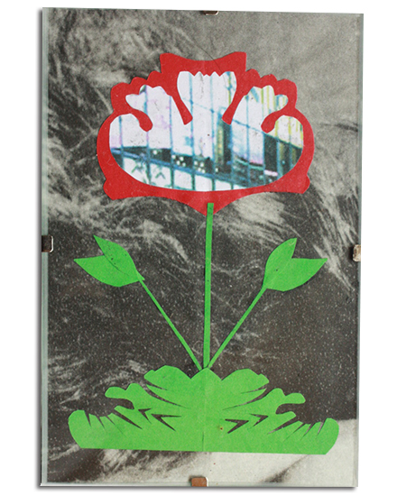
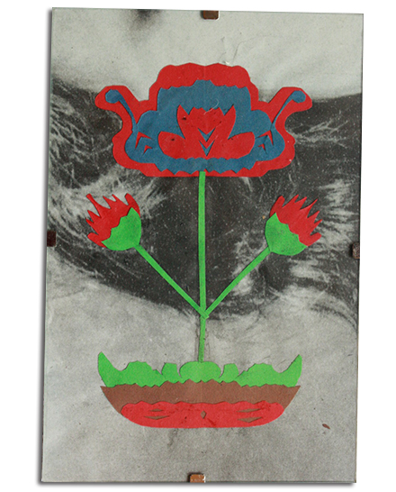
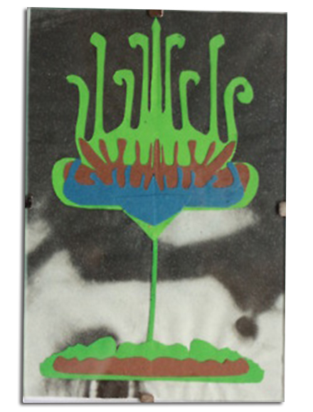
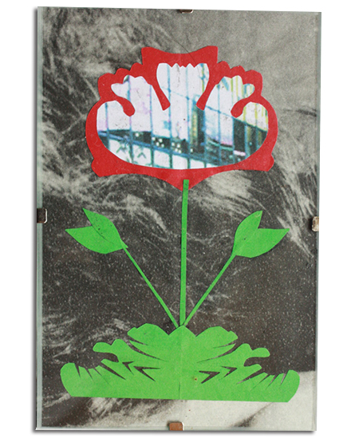
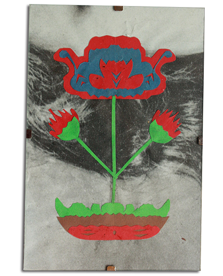
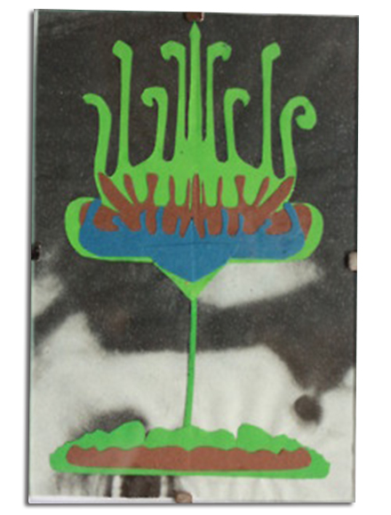
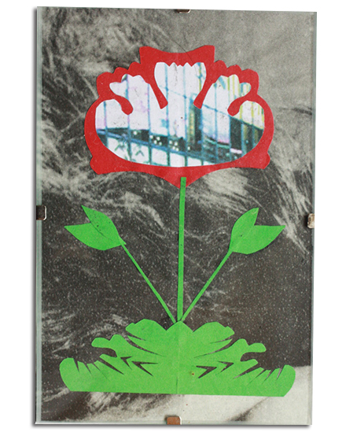

Polish Folk Art
I first practiced wycinanki as a child. More recently, I have been influenced by the 1922 wycinanki of my 103 year old Grandmother’s. I like playing with layering and juxtaposition so I combined different paperweights and textures from different periods throughout the 20th century. In contrast with the folklore ethos, the fall of communism enabled Institutions and businesses to use wycinanki to legitimize themselves in the eyes of the public. The change from communism to capitalism brought about developments in technology such as more mass production. I have recycled these materials to make a comment on consumption which contrasts with the As well as making this link, the particular wycinanka here symbolizes fertility, life and nature, because the print in the background of a pixelated insect, and traditional floral design in the foreground.Like the original artists of the 1920s, I use wycinanki for interior decoration purposes, simply because of the pleasure I experience when looking at them.


